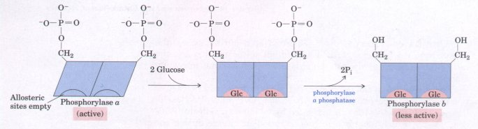
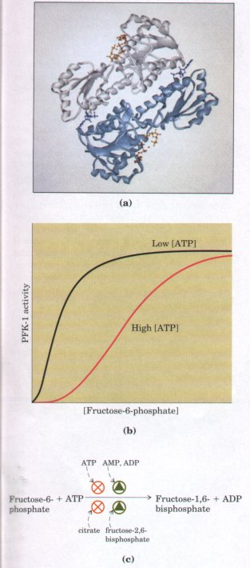
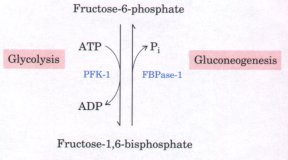
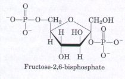

glucose + Pi
glucose + PiThe glycogen phosphorylase of liver is similar to that of muscle; it too is a dimer of identical subunits, and it undergoes phosphorylation and dephosphorylation on Serl4, interconverting the b and a forms. However, its regulatory properties are slightly different from those of the muscle enzyme, reflecting the different role of glycogen breakdown in liver. Liver glycogen serves as a reservoir that releases glucose into the blood when blood glucose levels fall below the normal level (4 to 5 mM). Glucose-1-phosphate formed by liver phosphorylase is converted (as in muscle) into glucose-6-phosphate by the action of phosphoglucomutase (p. 422). Then glucose-6-phosphatase, an enzyme present in liver but not in muscle, removes the phosphate:
Glucose-6-phosphate + H2O glucose + Pi
When the blood glucose level is low, the free glucose produced from glycogen in the liver by these reactions is released into the bloodstream and carried to tissues (such as the brain) that require it as a fuel. (For most tissues, glucose is only one of several equally useful fuels.)
Glycogen phosphorylase of liver, like that of muscle, is under hormonal control. Glucagon is a hormone released by the pancreas when blood glucose levels fall below normal. When glucagon binds to its receptor in the plasma membrane of a hepatocyte, a cascade of events essentially similar to that in muscle (Fig. 14-18) results in the conversion of phosphorylase b to phosphorylase a, increasing the rate of glycogen breakdown and thereby increasing the rate of glucose release into the blood.

Figure 14-19 Glycogen phosphorylase as a glucose sensor. Glucose binding to an allosteric site in liver glycogen phosphorylase a induces a conformational change that exposes the phosphorylated 5er14 residues to the action of phosphorylase a phosphatase, which converts phosphorylase a to b, reducing its activity in response to high blood glucose.
Liver glycogen phosphorylase, like that of muscle, is subject to allosteric regulation, but in this case the allosteric regulator is glucose, not AMP. When the concentration of glucose in the blood rises, glucose enters hepatocytes and binds to the regulatory site of glycogen phosphorylase a, causing a conformational change that exposes the phosphorylated 5er14 residues to dephosphorylation by phosphorylase a phosphatase (Fig. 14-19). In this way, glycogen phosphorylase a acts as the glucose sensor of liver, slowing the breakdown of glycogen whenever the level of blood glucose is high.
Hexokinase, which catalyzes the entry of free glucose into the glycolytic pathway, is another regulatory enzyme. The hexokinase of myocytes has a high affinity for glucose (it is half saturated at about 0.1 mM). Glucose entering myocytes from the blood (in which the glucose concentration is 4 to 5 mM) produces an intracellular glucose concentration high enough to saturate hexokinase, so that it normally acts at its maximal rate. Muscle hexokinase is allosterically inhibited by its product, glucose-6-phosphate. Whenever the concentration of glucose6-phosphate in the cell rises above its normal level, hexokinase is temporarily and reversibly inhibited, bringing the rate of glucose-6phosphate formation into balance with the rate of its utilization and reestablishing the steady state.
Mammals have several forms of hexokinase, all of which catalyze the conversion of glucose into glucose-6-phosphate. Different proteins that catalyze the same reaction are called isozymes (Box 14-3). The predominant hexokinase isozyme in liver is hexokinase D, also called glucokinase, which differs in two important respects from the hexokinase isozymes in muscle.
First, the glucose concentration at which glucokinase is half=saturated (about 10 mM) is higher than the usual concentration of glucose in the blood. Because the concentration of glucose in liver is maintained at a level close to that in the blood by an efficient glucose transporter, this property of glucokinase allows its direct regulation by the level of blood glucose. When the glucose concentration in the blood is high, as it is after a meal rich in carbohydrates, excess blood glucose is transported into hepatocytes, where glucokinase converts it into glucose-6-phosphate.
Second, glucokinase is inhibited not by its reaction product glucose-6-phosphate but by its isomer, fructose-6-phosphate, which is always in equilibrium with glucose-6-phosphate because of the action of phosphoglucose isomerase. The partial inhibition of glucokinase by fructose-6-phosphate is mediated by an additional protein, the regulator protein. This regulator protein also has affinity for fructose-1phosphate, which competes with fructose-6-phosphate and cancels its inhibitory effect on glucokinase. Because fructose-1-phosphate is present in liver only when there is fructose in the blood, this property of the regulator protein explains the observation that ingested fructose stimulates the phosphorylation of glucose in the liver.
The pancreatic ,β cells, which are responsible for the release of insulin when blood glucose levels rise above normal, also contain glucokinase and the inhibitory regulator protein.
B O X 14-3Isozymes: Different Proteins That Catalyze the Same ReactionThe several forms of hexokinase found in mammalian tissues are but one example of a common situation in which the same reaction is catalyzed by two or more different molecular forms of an enzyme. These multiple forms, called isozymes or isoenzymes, may occur in the same species, in the same tissue, or even in the same cell. The different forms of the enzyme generally differ in kinetic or regulatory properties, in the form of cofactor they use (NADH or NADPH for dehydrogenase isozymes, for example) or in their subcellular distribution (soluble or membrane-bound). Isozymes commonly have similar, but not identical, amino acid sequences, and in many cases they clearly share an evolutionary origin. One of the first enzymes found to have isozymes was lactate dehydrogenase (LDH) (p. 416). LDH occurs in vertebrate tissues as at least five different isozymes separable by electrophoresis. All LDH isozymes contain four polypeptide chains (each of Mr 33,500), but the five isozymes contain different ratios of two kinds of polypeptides that differ in composition and sequence. The A chains (also designated M for muscle) and the B chains (also designated H for heart) are encoded by two different genes. In skeletal muscle the predominant isozyme contains four A chains, and in heart the predominant isozyme contains four B chains. LDH isozymes in other tissues are a mixture of the five possible forms, which may be designated A4, A3B, A2B2, AB3, and B4. The different LDH isozymes have significantly different values of Vmax and Km, particularly for pyruvate. The properties of LDH isozyme A4 favor rapid reduction of very low concentrations of pyruvate to lactate in skeletal muscle, whereas those of isozyme B4 tend to favor rapid oxidation of lactate to pyruvate in the heart. The distribution of different isozyme forms of a given enzyme reflects at least four factors: l. The differing metabolic patterns in different organs. The two forms of glycogen phosphorylase found in skeletal muscle and in liver differ in their regulatory properties, reflecting the dif ferent roles of glycogen breakdown in these two tissues, as described in the text. 2. The different locations and metabolic roles of a given enzyme within one type of cell. The isocitrate dehydrogenase isozymes of the cytosol and the mitochondrion are an example (Chapter 15). 3. The differentiation and development of adult tissues from their embryonic or fetal forms. For example, the fetal liver has a characteristic isozyme distribution of LDH, which changes as the organ undergoes differentiation to its adult form. An interesting discovery is that some of the enzymes of glucose catabolism in malignant (cancer) cells occur as their fetal, not adult, isozymes. 4. The fine-tuning of metabolic rates through the different responses of isozyme forms to allosteric modulators. Hexokinase D (glucokinase) of liver and the hexokinase isozymes found in other tissues differ in their sensitivity to inhibition by their product, glucose-6-phosphate (p. 432). |
In vertebrates there are at least three isozymes of pyruvate kinase, differing somewhat in their tissue distribution and in their response to modulators. High concentrations of ATP inhibit pyruvate kinase allosterically, by decreasing the affinity of the enzyme for its substrate phosphoenolpyruvate (PEP). The level of PEP normally found in cells is not high enough to saturate the enzyme, and the reaction rate will accordingly be low at normal PEP concentrations.
Pyruvate kinase is also inhibited by acetyl-CoA and by long-chain fatty acids, both important fuels for the citric acid cycle. (Recall that acetyl-CoA (acetate) is produced by the catabolism of fats and amino acids, as well as by glucose catabolism; see Fig. 4a, p. 362. ) Because the citric acid cycle is a major source of energy for ATP production, the availability of these other fuels reduces the dependence on glycolysis for ATP.
Thus, whenever the cell has a high concentration of ATP, or whenever ample fuels are already available for energy-yielding respiration, glycolysis is inhibited by the slowed action of pyruvate kinase. When the ATP concentration falls, the affinity of pyruvate kinase for PEP increases, enabling the enzyme to catalyze ATP synthesis even though the concentration of PEP is relatively low. The result is a high steadystate concentration of ATP.
| Glucose-6-phosphate can flow either into
glycolysis or through one of the secondary oxidative
pathways described later in this chapter. The
irreversible reaction catalyzed by PFK-1 is the step that
commits a cell to the passage of glucose through
glycolysis. In addition to the binding sites for its
substrates, fructose-6-phosphate and ATP, this complex
enzyme has several regulatory sites where allosteric
activators or inhibitors bind. ATP is not only the substrate for PFK-1, but also the end product of the glycolytic pathway. When high ATP levels signal that the cell is producing ATP faster than it is consuming it, ATP inhibits PFK-1 by binding to an allosteric site and lowering the affinity of the enzyme for its substrate fructose-6-phosphate (Fig. 14-20). ADP and AMP, which rise in concentration when the consumption of ATP outpaces its production, act allosterically to relieve this inhibition by ATP. These ef fects combine to produce higher enzyme activity when fructose-6phosphate, ADP, or AMP builds up, and lower activity when ATP accumulates. Citrate (the ionized form of citric acid), a key intermediate in the aerobic oxidation of pyruvate (Chapter 15), also serves as an allosteric regulator of PFK-1; high citrate concentration increases the inhibitory effect of ATP, further reducing the flow of glucose through glycolysis. In this case, as in several others to be encountered later, citrate serves as an intracellular signal that the cell's needs for energy-yielding metabolism and for biosynthetic intermediates are being met. The most significant allosteric regulator of PFK-1 is fructose-2,6bisphosphate, which, as noted earlier, strongly activates the enzyme. The concentration of fructose-2,6-bisphosphate in liver decreases in response to the hormone glucagon, slowing glycolysis and stimulating glucose synthesis in liver. |
 Figure 14-20 (a) A ribbon diagram of E. coli phosphofructokinase-1, showing two of its four identical subunits. Each subunit has its own catalytic site and its own binding sites for the allosteric activators. (b) Allosteric regulation of muscle PFK-1 by ATP, shown by a substrate-activity curve. At low concentrations of ATP the K0.5 (p. 231) for fructose 6-phosphate is relatively low, enabling the enzyme to function at a high rate at relatively low concentrations of fructose-6-phosphate. At high ATP, K0.5 for fructose-6-phosphate is greatly increased, as indicated by the sigmoid relationship between substrate concentration and enzyme activity. (c) A summary of the regulators affecting PFK-1 activity. |
| Most organisms can synthesize glucose from simpler precursors such as pyruvate or lactate. In mammals this process, called gluconeogenesis, occurs primarily in the liver, and its role is to provide glucose for export to other tissues when other sources of glucose are exhausted. Gluconeogenesis employs most of the same enzymes that act in glycolysis, but it is not simply the reversal of glycolysis. Seven of the glycolytic reactions are freely reversible, and the enzymes that catalyze these reactions also function in gluconeogenesis. Three reactions of glycolysis are so exergonic as to be essentially irreversible: those catalyzed by hexokinase, phosphofructokinase-l, and pyruvate kinase. Detours around each of these irreversible steps are employed in gluconeogenesis. For example, in gluconeogenesis the conversion of fructose-1,6-bisphosphate to fructose-6-phosphate is catalyzed by fructose1,6-bisphosphatase (FBPase-1) (Fig. 14-21). |  Figure 14-21 The reaction in gluconeogenesis that bypasses the irreversible phosphofructokinase-1 reaction in glycolysis. The conversion of fructose-1,6bisphosphate to fructose-6-phosphate is catalyzed by fructose-1,6-bisphosphatase (called FBPase-1 to distinguish it from a similar enzyme described in Chapter 19). |
To prevent futile cycling in which glucose is simultaneously degraded by glycolysis and resynthesized by gluconeogenesis (Chapter 19), the enzymes unique to each pathway are reciprocally regulated by common allosteric effectors. Fructose-2,6-bisphosphate, a potent activator of liver PFK-1 and therefore of glycolysis, also inhibits FBPase-l, thereby slowing gluconeogenesis.

Glucagon, the hormone that signals low blood sugar, lowers the level of fructose-2,6-bisphosphate in liver, slowing the consumption of glucose by glycolysis and stimulating the production of glucose for export by gluconeogenesis. We will return to a more complete discussion of this coordinate regulation in Chapter 19, when we have discussed gluconeogenesis in more detail.
Fructose-2,6-bisphosphate is found in all animals, in fungi, and in some plants, but not in bacteria. It stimulates all known animal PFK-1 activities as well as PFK-1 from yeast. In plants, fructose-2,6-bisphosphate also regulates carbohydrate metabolism, but by mechanisms not identical with those in liver; plants do not, of course, have glucagon. Fructose-2,6-bisphosphate activates the PPi-dependent phosphofructokinase of plants that is responsible for fructose-1,6-bisphosphate formation in glycolysis (p. 407), but does not activate the ATP-dependent PFK-1 of plants. Plant PFK-1 is, however, strongly inhibited by phosphoenolpyruvate, a glycolytic intermediate downstream from fructose1,6-bisphosphate.